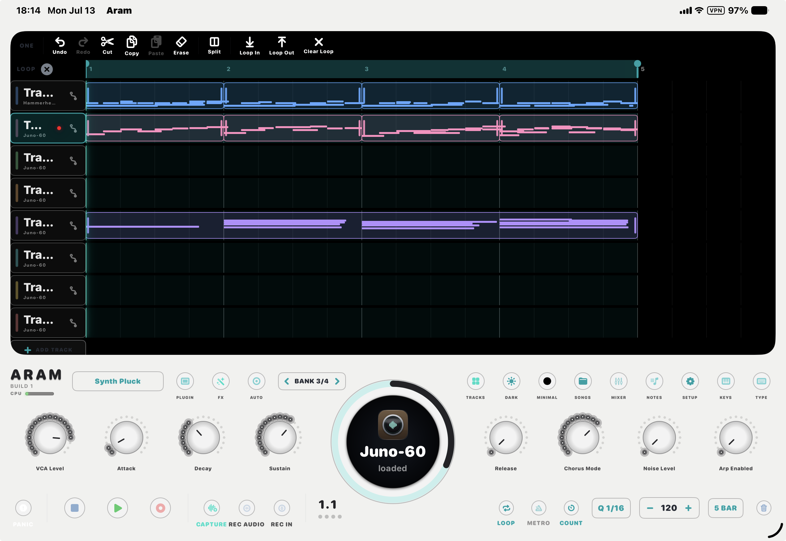
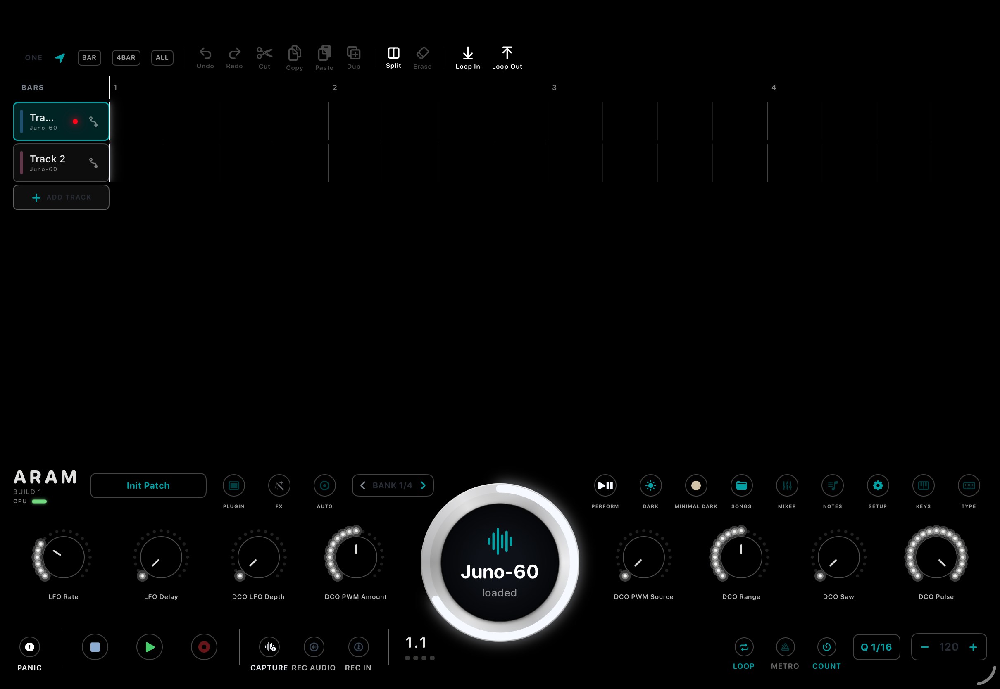
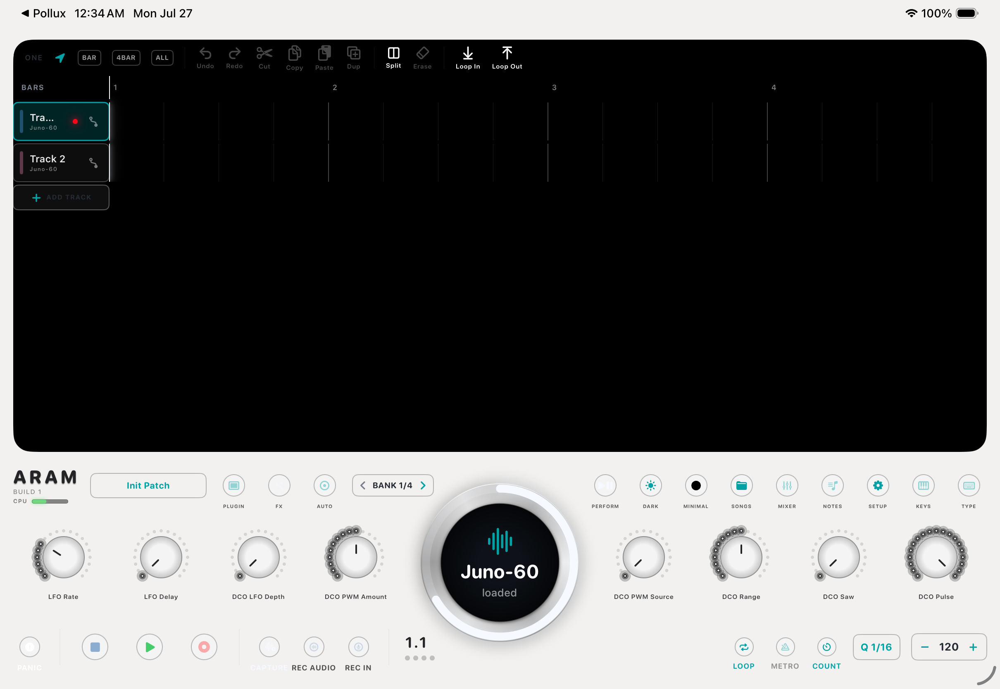
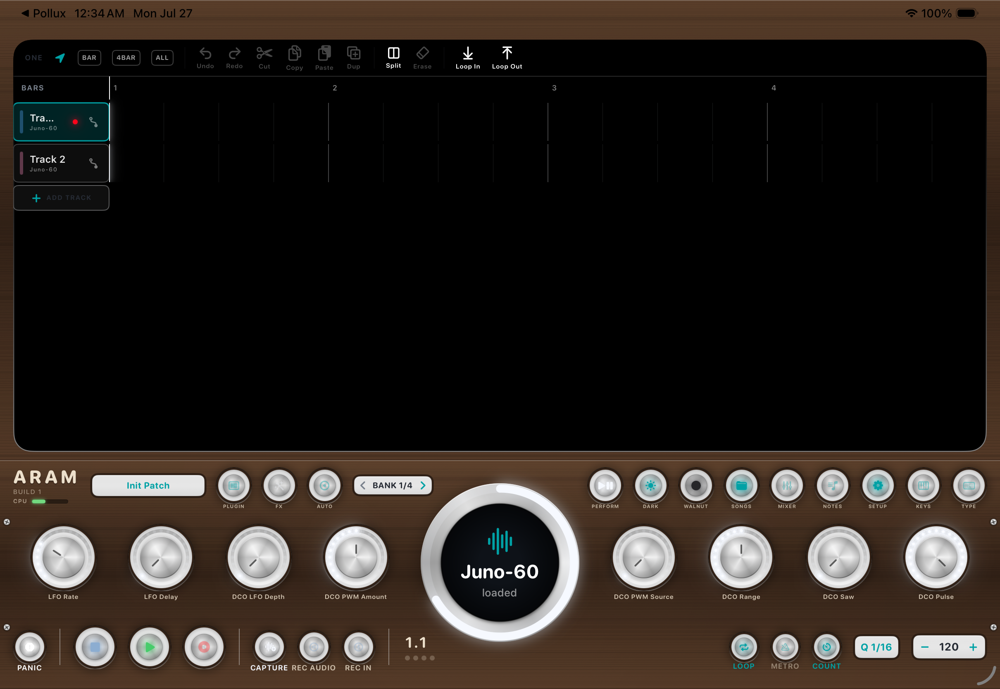
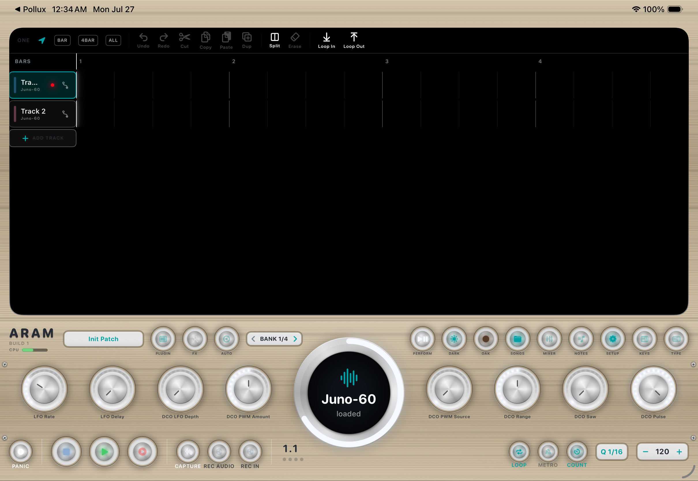
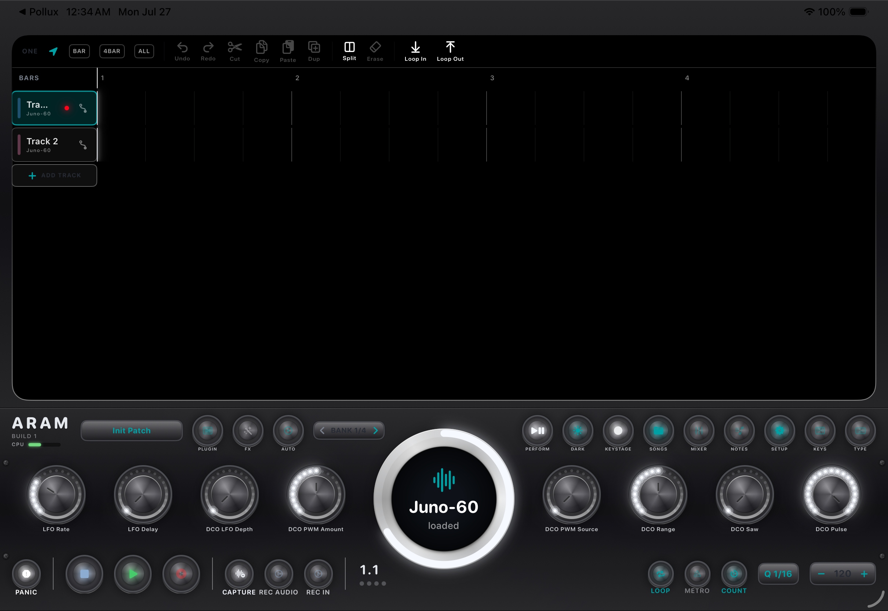
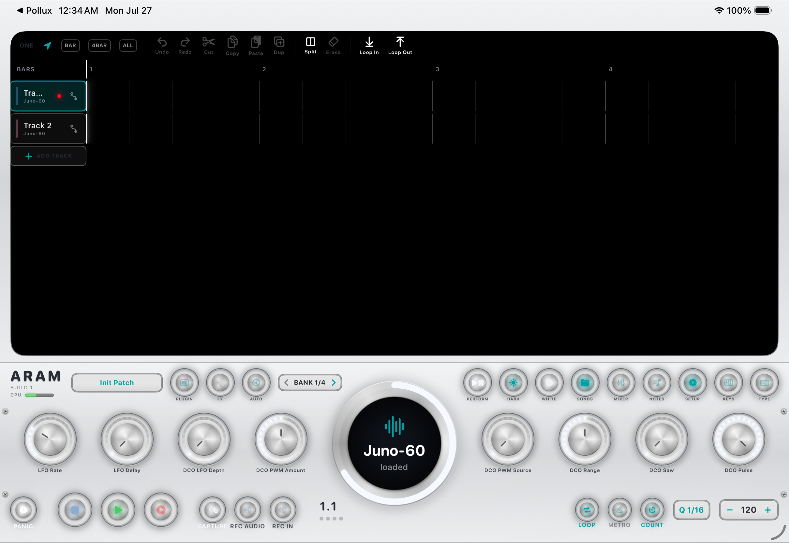
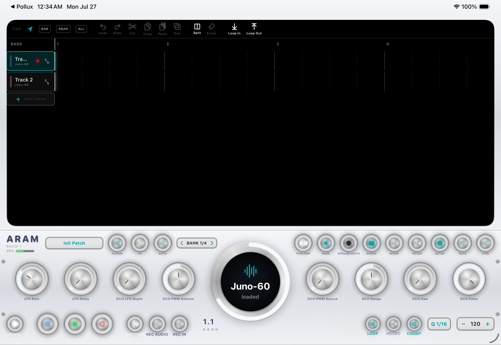
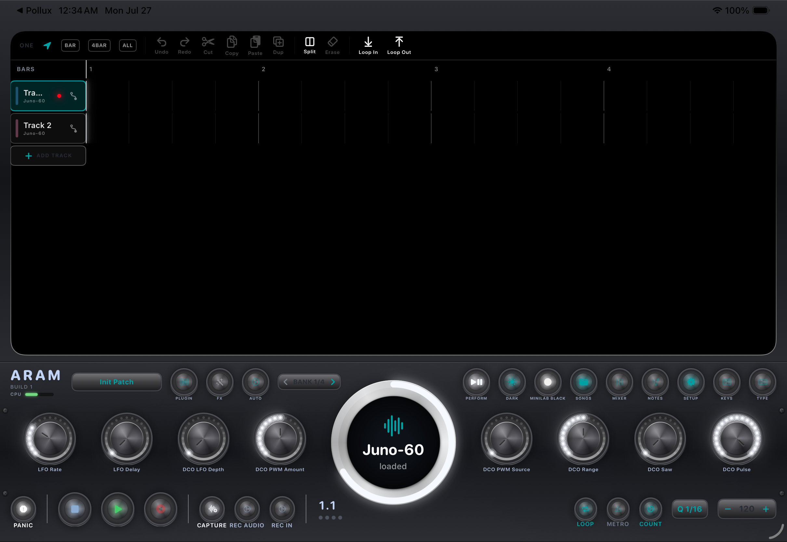
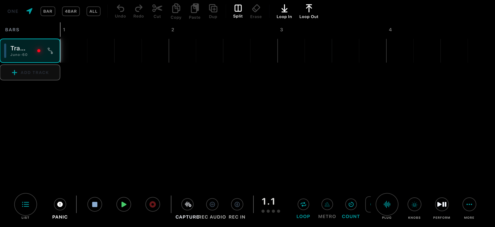

A R A M
A recording studio that thinks it's a piece of hardware.
iPad · iPhone · Apple Silicon Mac

ARAM is a personal project, installed directly — it is not on the App Store.
The Main Screen
The interface is a piece of studio hardware: a faceplate with physical-looking knobs and LED rings, a big browser wheel with a round screen, and a dark "OLED" arranger.
- Left / center — the arranger: zoomable multi-track timeline with MIDI and audio clips, playhead, and the loop band on the ruler.
- Right — the control deck: the sound-browser wheel, eight parameter knobs bound to the selected track's instrument, and utility buttons.
- Bottom — transport: Panic · Stop · Play · Record · Capture · REC AUDIO · REC IN · quantize · tempo.
Tracks & Sounds
Every track hosts an AUv3 instrument or holds audio clips. Two plugins ship built in, so a fresh install makes sound immediately: the Juno-60 (auto-loaded on new tracks) and Singularity, a deep-space reverb. Every AUv3 instrument and effect installed on the device appears too, hosted out-of-process.
- Add a track: the + in the track list — or tap an empty pad in TRACKS pad mode.
- Per-track: volume, pan, mute, solo, record-arm, live VU in the header.
Recording MIDI
- Select a track (it auto-arms), press Record — count-in, then everything you play is recorded.
- Recording is open-ended, like tape — the song grows for as long as you play. Set a loop region first to loop-record instead; passes overdub.
- Quantize: auto-quantize on record, apply-to-selection, re-quantize; the grid also drives edit snapping.
Playback is sample-accurate: notes are scheduled ahead to exact sample positions with per-plugin latency compensation — heavy synths land on the grid alongside light ones.
Capture — the "I just played something" button
ARAM keeps a rolling two-minute buffer of everything you play, recording or not. Press CAPTURE after noodling something good:
- From silence: tempo and bar count detected, loop created, already rolling.
- Over a running loop: your notes drop in as an overdub, in time.
Recording Audio
- REC AUDIO — bounce the synths: per-track WAV stems + the master mix, dropped onto a new audio track at the right beat.
- REC IN — record the mic or a USB interface (auto-preferred when connected) to a new audio track.
Audio clips get waveforms and the same non-destructive move / trim / split / copy / paste as MIDI clips.
The Arranger
- Pinch to zoom (axis-aware), one-finger pan, tap to place the playhead.
- Drag the ruler for the loop region — it doubles as the edit range for Cut / Copy / Erase / Paste (ONE or ALL tracks).
- Clips: tap to select, then drag to move, edge-drag to trim; split at the playhead; Dup ×1/×2/×4; zoom presets; track reorder.
- The timeline is a true arrangement — recording or dragging past the end grows the song.
- Undo is descriptive — the toast names what it undid.
Piano Roll
NOTES opens a floating, resizable editor for the selected track: tap to add, drag to move, edge-drag to resize, double-tap to delete, velocity slider, live playhead.
The Browser Wheel
- Drag (or turn a hardware encoder) to browse instruments — icon and name on the round screen.
- Tap (or click the encoder) to load onto the selected track; "loaded" confirms.
- Browse away and it snaps back to the loaded sound after ~4s, like a hardware menu timeout.
FX Chains & the Mixer
Each track has an FX chain between instrument and mixer: add effects, drag to reorder in signal order, open or remove any insert. MIXER opens a full console — fader, pan, mute, solo, live VU per strip, master strip with main fader — locked in step with hardware faders.
Automation
Arm AUTO, press play, turn knobs — moves are recorded and replayed. Each track header's curve menu shows a parameter lane on the track; draw on it to edit. FX parameters automate too.
Pad Modes
The 16-pad surface (hardware + on-screen) has seven modes:
| Mode | Pads show | Pressing |
|---|---|---|
| TRACKS | a pad per track in its color; brightness follows level | select — or empty pad = new track |
| STEP | 16 steps of the current bar | toggle the step |
| DRUM | dim track color | play/record drums with velocity |
| VU | per-track meters | — |
| LOOP | pads = bars 1–16, amber = loop | move the loop; hold+tap = span bars |
| PERFORM | pastel controls (2×4) | Track ▲▼ · Preset ▲▼ · Stop · Play · Record (hold = Capture) · Metro (hold = quantize) |
| MUTE | a pad per track, red = muted | toggle mute |
Themes
Eight finishes, from SETUP → Display. Minimal Dark is the factory default — true OLED black, hairlines and ink only. The theme saves with each song and comes back when it loads.








MIDI Learn — map anything
SETUP → MIDI Learn: tap an action, wiggle a control, bound. Any knob, fader, pad, button — even the sustain pedal — can drive ~40 actions: transport, undo/redo/panic, navigation, cutoff & resonance, param knobs, the whole mixer.
- Your binding wins over the built-in driver for that control, on that device only.
- A master toggle turns the map on/off instantly.
- Bindings save with the song — each song can carry its own control setup.
Controllers
Auto-detected on plug-in — no setup screens:
- Arturia MiniLab 37 — the deepest integration; see below.
- Arturia KeyLab mkII 88 — full MCU: encoders with banking, faders, select LEDs, transport, preset stepping, mirrored LCD, 16 RGB pads.
- Arturia MiniLab 3 — DAW-mode: encoders, faders, browse/load, transport, OLED + pad LEDs.
- Korg Keystage 49 — native mode with knob-OLED labels, transport, track/preset/bank nav.
- Novation Launchkey Mini 37 MK4 — pads, knobs, browse, transport, OLED feedback.
- PreSonus ioStation 24c — motor-fader surface + the preferred audio interface.
- Arturia KeyLab 88 mk1 — via a MIDI Control Center template (setup card in-app).
- Midiplus X3 mini — works out of the box: MMC buttons drive transport with ◀◀/▶▶ stepping presets; knobs = volume · pan · cutoff · resonance, matched by name on the loaded synth.
Any keyboard with MMC transport buttons gets working transport for free — and ARAM sends MIDI clock so hardware arpeggiators lock to the song. A computer keyboard is a control surface too (shortcuts).
Arturia MiniLab 37
One-time setup: hold Shift + press Pad 3 until the display reads DAW.
| Control | Function |
|---|---|
| Keybed / wheels | play the selected track |
| 8 knobs | selected track's params (banked); OLED shows name + value bar |
| 4 faders | track 1–4 volumes |
| Encoder turn / click | browse / load sounds |
| Encoder long-press | cycle pad mode |
| Shift+turn / click | step presets / page the knob bank |
| Pads | the 16-pad surface (bank A/B via Shift+Pad 2) |
| Shift+Pads 4–8 | Loop · Stop · Play · Record (hold = quantize take) · Tap (hold = metronome) |
SETUP → MiniLab 37 → Pad colors paints every pad persistently — custom colors survive bank switches and transport lights. The OLED mirrors everything: sounds, knob and fader bars, preset names, confirmations.
Songs & iCloud
SONGS manages the library: Save / Save As / New, tap to load, swipe to rename or delete. A song stores everything — instruments and their full patch state, FX chains, notes, automation, mixer, tempo, loop, its theme, and its MIDI Learn bindings.
Songs live in iCloud Drive (visible in Files), sync across devices, and fall back to local Documents without iCloud.
Keyboard Shortcuts
| Key | Action |
|---|---|
| Space | play / stop |
| Return | return to start |
| R | record |
| I | Capture |
| ↑/↓ | preset (with Shift: track) |
| ←/→ | seek by bar |
| N P M | new track · pad mode · metronome |
| Z/⇧Z | undo / redo |
| piano mode | play notes on the QWERTY rows |
Setup & Diagnostics
- Display — themes, LEDs, keep-awake, layout.
- MIDI Learn — map anything; Controller Learn — guided capture; Raw MIDI Monitor — debug any controller.
- Plugins — choose which AUv3s appear. Audio — recorded-takes browser. Diagnostics — live log with share.
Troubleshooting
- Controller does nothing → Raw MIDI Monitor; MiniLab 37 must be in DAW mode.
- No third-party instruments → open their host apps once, then reopen ARAM.
- Dropouts → out-of-process AUv3s are hungry; watch the CPU meter.
- Audio died after a call / route change → the engine auto-recovers; reload a stuck plugin from its track menu.
- Stuck notes → PANIC.
ARAM on iPhone
The full engine with a compact layout: portrait stacks the arranger over a control strip and wheel; landscape gives the arranger the whole screen with one slim strip.

ARAM on the Mac
The real iOS app runs natively on Apple Silicon ("Designed for iPad") — same songs via iCloud, same plugins, controllers over USB — installed from a drag-to-Applications DMG.
There is also Aram Workstation — the private edition with six synths built in. It asks for a code at the door.